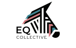

Über uns
Ein Kollektiv aus drei Menschen
Wir sind ein gleichwertiges Team von Unternehmerinnen und Unternehmern und arbeiten selbst so, wie wir es auch in euren Teams anregen.

Das Team

Florian Schäffer
Organisationsentwickler und Trainer
Florian kommt aus der Technik und leitet seit vielen Jahren Teams und Bereiche. Bei uns sorgt er dafür, dass Ideen und Strategien im Arbeitsalltag ankommen.
Mehr über Florian →
Franziska Purr
Organisationsentwicklerin und Trainerin
Franziska ist Psychologin und beschäftigt sich damit, wie Menschen in komplexen Systemen gut zusammenarbeiten. Sie baut Strukturen, in denen jede Person ihre Stärken einbringen kann.
Mehr über Franziska →
Michael Bayer
Organisationsentwickler und Trainer
Michael war Projektleiter, Teamleiter und Organisationsentwickler und weiß, wie viel gute Zusammenarbeit wert ist. Als Loop Fellow unterstützt er Menschen und Teams dabei, ihr Potenzial zu entfalten.
Mehr über Michael →Wofür wir stehen
Wir machen Organisationen zu Orten, an denen Menschen ihre Arbeit sinnvoll finden, einander vertrauen und wirksam zusammenarbeiten.
Wir beziehen alle Personen mit ein
Veränderung gelingt, wenn Menschen sie mitgestalten, statt sie nur zu erleben.
Wir gehen in iterativen Schritten vor
Wir schauen hin, setzen um, messen und lernen daraus.
Wir befähigen zu kontinuierlicher Veränderung
Ihr sollt Veränderung künftig selbst tragen können.
Wir folgen einer ganzheitlichen Betrachtung
Haltung, Verhalten, Kultur und Struktur gehören zusammen.


Unser Name und das Zebra
EQ steht für emotionale Intelligenz. Für uns ist sie der Schlüssel, um sozialen und technologischen Wandel zu gestalten.
Das Zebra ist die Alternative zum Einhorn, dem Start-up mit Milliardenbewertung. Seine Streifen zeigen: Wirtschaftlicher Erfolg und gesellschaftlicher Beitrag gehören zusammen. Es steht für Nachhaltigkeit, soziale Verantwortung und Kooperation statt Konkurrenz. Deshalb haben wir das Zebra gewählt: Wir wachsen gemeinsam, nicht auf Kosten anderer, und tragen diese Haltung in Teams und Organisationen weiter.

Wie wir arbeiten

Wir verteilen Aufgaben nach Stärken statt nach Positionen, entwickeln unsere Strukturen gemeinsam weiter und pflegen bewusst unsere Beziehungen zueinander. So leben wir selbst, was wir Teams und Organisationen mitgeben.


Sprechen wir über eure Lage
Eine Stunde, in der wir gemeinsam anschauen, was bei euch ansteht und was sich ändern lässt. Danach wisst ihr, wie es weitergehen kann. Wir treffen uns online oder, wenn ihr in der Region Rosenheim sitzt, gern bei euch vor Ort oder in einem Trainingsraum in Rosenheim.